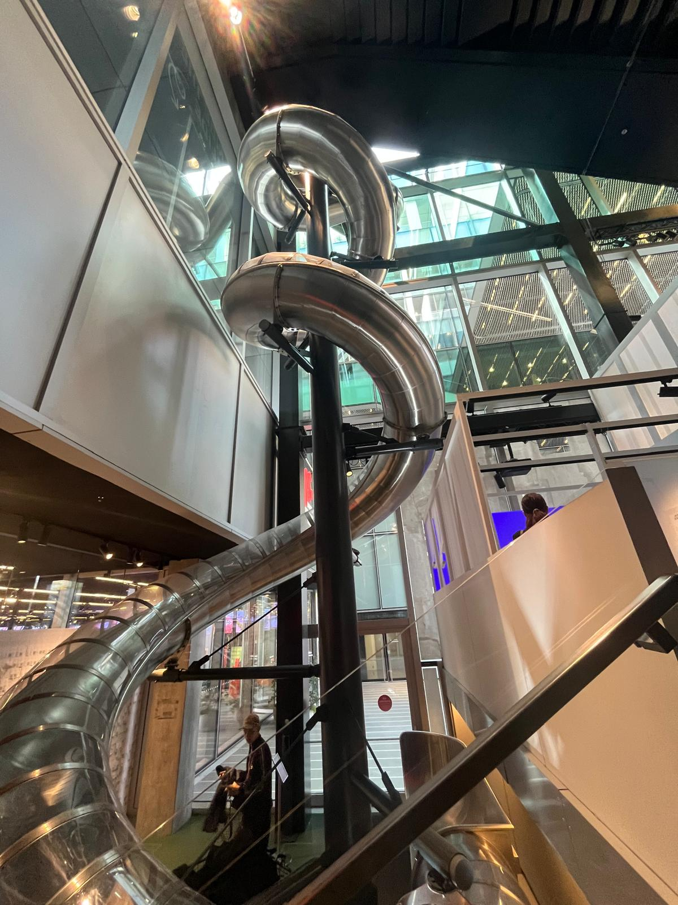

DAC SlideChair Galore at DesignDanmarkPrint of Woman with a halo of stars around her head like the Paramount Logo in the Banksy MuseumAalborg Robot Street Art where an amusement park used to beStreet Art in Aalborg
Overview of September 7th - September 13th, 2025: Core Course Week!
Main theme of the week: I only had my core course (Urban European Experience), so I go to spend a lot of time with them and exploring urban environments.
Biggest highlight: Aalborg and learning people's names haha
Biggest challenge: Patience with myself and others
More detailed thoughts
September 8th - It's also K7 week. There are many free museums in Denmark, so I’m starting my museum grind. First the DAC before my core course sails on the Harbour Bus. It was okay. I liked the slide and that I got in for free. The location with the glass building and the view of the harbour is nice, but not worth the normal ticket fee.
September 9th - traveled 40 min to Malmo to observe the difference in urban spaces. It is a smaller city both geographically and population wise than Copenhagen and it shows with the shorter buildings and more open space to roam by foot and bike. There is more of a car culture as well as the Swedes are not taxed as much on their vehicle purchases. I was shocked when I learned it was 100% for the Danes! That’s a lot!
September 10th - big museum day visiting three museums. See photos. Glad I went when it was free.
September 11 - 13 - Core Course Short Study Tour to Aalborg in northern Denmark (Jutland). I quite enjoyed it. It was nice getting to know the people in my class (we did a name game!). Also Stephen joined and he provided a lot of detail and an anchor to Regitze who is a little scattered sometimes. Aalborg was sleepy compared to Copenhagen, but that was a nice change of pace. While we divided into groups, I have realized that this is my favorite group of people overall. I feel like these people actually care about their education in a way that some of my other peers have not convinced me that they do.
September 14 - I wake up to what sounds like a party blasting through my window. Nope, it’s the half marathon. So I decided to hit five museums. I was museum-ed out by the end of the day, but I felt quite cultured.
Quick Stats
Hours on train : 15!
Places visited: Aalborg, Malmo, DAC, DesignDanmark, National Musem, Copenhagen Museum, Banksy, SMK, CopenhagenContemporary, Kunsten, Buens Bogcafe, Natural History Musuem, and probably another Musuem I don't remember. It was a lot.
Favorite food: Dinner at Kunsten
Shout out to the new people I met (who I want to hang out with again): Catherine H, Allie C, Sinclair, and Ava.
Half Marathon in Copenhagen (a little like Marmon!)Malmo SpineBuens BogCafeTrain Bridge in AalborgDinner at Kunsten